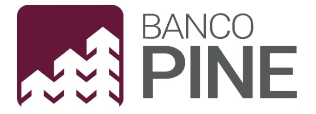

🌟 Com foco em resiliência, conformidade e inovação, transformei desafios em oportunidades, utilizando frameworks como ISO 27001, NIST CSF, COBIT e DAMA-DMBOK. Abaixo, destaco minhas principais contribuições em empresas de tecnologia e finanças.
Especialista em Governança de Segurança da Informação | Fluydez Tech
PerÃodo: Mai/2024 – Fev/2025
Empresa: Fluydez Tech
Cargo: Especialista em Governança de Segurança da Informação
Como consultor PJ, liderei projetos de Segurança da Informação e Governança de TI, estruturando ambientes resilientes com base em ISO 27001, NIST CSF, COBIT e DAMA-DMBOK. Implementei controles robustos em nuvem (AWS, Azure, GCP) e promovi uma cultura data-driven.
- Reduzi riscos crÃticos em 60% com matrizes de risco e relatórios em Power BI.
- Garanti 95% de conformidade na auditoria ISO 27701, integrando privacidade ao SGSI.
- Aumentei a resiliência operacional em 30% com planos de continuidade (PCN/DRP).
- Reduzi cliques maliciosos em 40% com treinamentos de cibersegurança.
Especialista em Governança de Dados e IA Ética | EM Consulting
PerÃodo: Jun/2024 – Jan/2025
Empresa: EM Consulting
Cargo: Especialista em Governança de Dados e IA Ética
Como consultor independente, estruturei governança de dados e IA ética, alinhada à LGPD, GDPR, ISO 27701 e AI Act. Implementei papéis como Data Steward e catálogos de dados, promovendo transparência e conformidade.
- Reduzi não conformidades em 70% com frameworks ISO 27001 e ISO 42001.
- Aumentei reaproveitamento de dados em 25% com governança DAMA-DMBOK.
- Reduzi riscos operacionais em 60% com matrizes ISO 31000.
- Capacitei 300+ colaboradores em segurança e ética em IA.
Analista de Segurança da Informação Sênior | PagBank
 PerÃodo: Out/2023 – Fev/2024
PerÃodo: Out/2023 – Fev/2024
Empresa: PagBank
Cargo: Analista de Segurança da Informação Sênior
Atuei na gestão de riscos e continuidade de negócios, utilizando RSA Archer e frameworks como ISO 27001, ISO 22301 e Bacen 4.658. Estruturei planos de ação e dashboards para alta gestão, elevando a resiliência operacional.
- Reduzi não conformidades em 65% em auditorias internas.
- Alcancei 95% de sucesso em testes de continuidade (PCN/DRP).
- Reduzi tempo de resposta a incidentes em 35% com Zero Trust.
- Promovi cultura de riscos com treinamentos em GCN.
Especialista em Segurança-Privacidade e Governança de TI | Semantix
 PerÃodo: Jun/2021 – Set/2023
PerÃodo: Jun/2021 – Set/2023
Empresa: Semantix
Cargo: Especialista em Segurança da Informação e Governança de Dados
Liderei projetos de segurança e governança de dados em ambientes multicloud, utilizando ISO 27001, ISO 27701 e DAMA-DMBOK. Reduzi não conformidades e otimizei custos em nuvem com FinOps.
- Reduzi riscos regulatórios em 70% com certificações ISO 27001/27701.
- Estruturei governança de dados, reduzindo inconsistências em 50%.
- Otimizei custos em nuvem em 15% com AWS, GCP e Azure.
- Reduzi incidentes de phishing em 40% com treinamentos.
Analista de Governança de TI Ãgil | Banco Pine

PerÃodo: Jul/2018 – Jun/2021
Empresa: Banco Pine
Cargo: Analista de Governança de TI Ãgil
Estruturei o Departamento de Governança de TI, liderando equipes e implementando COBIT 5, ITIL e Scrum. Otimizei processos com Bizagi e Power BI, aumentando a maturidade organizacional.
- Reduzi MTTR em 80% com gestão de incidentes via TOPDESK.
- Elevei maturidade de governança em 30% com KPIs.
- Reduzi custos operacionais em 20% com automações.
- Implantei GMUD, garantindo mudanças seguras.
Analista de Governança e Gestão de Ativos | Banco Itaú Unibanco
PerÃodo: Abr/2011 – Fev/2018
Empresa: Banco Itaú Unibanco
Cargo: Analista de Governança e Gestão de Ativos
Gerenciei 60 mil ativos de TI e otimizei processos com COBIT, ITIL e Kaizen. Liderei projetos como Cockpit TI, reduzindo custos e aumentando conformidade.
- Reduzi custos operacionais em 30% com Cockpit TI.
- Aumentei conformidade em 25% com auditorias.
- Reduzi tempo de restauração de serviços em 40%.
- Treinei equipes em governança e gestão de ativos.
Analista de Planejamento Estratégico | HP - Hewlett-Packard
 PerÃodo: Jan/2008 – Apr/2010
PerÃodo: Jan/2008 – Apr/2010
Empresa: HP - Hewlett-Packard
Cargo: Analista de Planejamento Estratégico e Governança de Dados
Otimizei relatórios comerciais com Yotta Report e Siebel, apoiando decisões estratégicas. Estruturei governança de dados com SharePoint, aumentando eficiência.
- Reduzi tempo de entrega de relatórios em 40% com Excel.
- Aumentei assertividade de metas em 25% com KPIs.
- Melhorei eficiência de processos em 35%.
- Garanti 100% de conformidade em auditorias comerciais.
Analista de Controle de Performance | Banco Itaú Unibanco
 PerÃodo: Mai/2006 – Jan/2008
PerÃodo: Mai/2006 – Jan/2008
Empresa: Banco Itaú Unibanco
Cargo: Analista de Controle de Performance Pleno
Gerenciei pagamentos e relatórios financeiros, otimizando processos com Excel avançado. Alinhei áreas internas, garantindo conformidade e eficiência.
- Reduzi tempo de rotinas financeiras em 20%.
- Melhorei performance comercial em 15% com relatórios.
- Garanti 100% de conformidade em pagamentos.
- Estruturei fluxos de contas, reduzindo retrabalho.
Analista de Controle Financeiro | Credicard
PerÃodo: Nov/2003 – Apr/2006
Empresa: Credicard
Cargo: Analista de Controle Financeiro Pleno
Controlei pagamentos e contas durante a transição Itaú/Citi, padronizando processos e garantindo estabilidade financeira com Excel e SAP.
- Reduzi tempo de processamento financeiro em 25%.
- Garanti zero interrupções em pagamentos crÃticos.
- Melhorei rastreabilidade de contas e relatórios.
- Apoiei integração de sistemas legados.